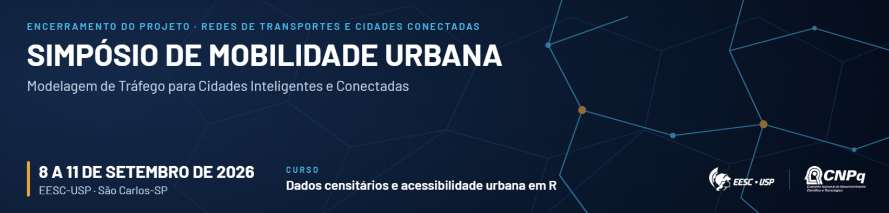

Dados Censitários e Acessibilidade Urbana em R
Material prático da oficina do Simpósio de Mobilidade Urbana (EESC-USP, 2026)
Apresentação

Este site reúne o material prático do workshop Dados Censitários e Acessibilidade Urbana em R, oferecida no Simpósio de Mobilidade Urbana, evento de encerramento do projeto Redes de Transportes e Cidades Conectadas, realizado na EESC-USP, em São Carlos-SP, entre 8 e 11 de setembro de 2026.
O objetivo do workshop é mostrar como obter e explorar os principais produtos do Censo Demográfico e produzir análises de acessibilidade urbana utilizando o R. Na primeira parte, trabalharemos com os principais produtos do Censo, incluindo agregados por setor censitário, microdados da amostra, grade estatística e CNEFE, sobretudo os resultados com implicações importantes para a pesquisa em transportes. Posteriormente, computaremos medidas de acessibilidade urbana, que combinam a distribuição das oportunidades no território com o desempenho da rede de transportes.
Como a oficina está organizada
São 8 horas de atividade, divididas em dois blocos de 4 horas. Cada bloco tem 2 horas expositivas e 2 horas de aplicação prática ao computador.
| Bloco | Teoria (2h) | Prática (2h) |
|---|---|---|
| Dados censitários | Conceitos, métodos e produtos do Censo Demográfico | Parte 1 deste site (capítulos 1 a 6) |
| Acessibilidade urbana | Conceitos, medidas e usos em planejamento | Parte 2 deste site (capítulos 7 a 10) |
Este material cobre apenas as partes práticas, e o conteúdo teórico é apresentado em sala, com material próprio. O que está aqui é o roteiro de código, pensado para ser acompanhado ao vivo e, depois, reexecutado por conta própria.
A Parte 1 percorre os principais produtos do Censo Demográfico, começando pela preparação do ambiente e pelos recortes territoriais do IBGE e avançando pelos agregados por setor censitário, pelos microdados da amostra, pela grade estatística e pelo CNEFE. Os agregados incluem uma seção dedicada às características urbanísticas do entorno dos domicílios, com recorte voltado a transportes.
A Parte 2 monta uma análise de acessibilidade do zero, com a preparação do ambiente de roteamento, a leitura dos insumos e a construção da rede multimodal, o cálculo dos indicadores a pé, de bicicleta, de carro e por transporte público e, por fim, a avaliação da distribuição social dessa acessibilidade, com medidas de desigualdade e de pobreza de acesso.
O estudo de caso
Todas as aplicações usam Anápolis-GO como território de referência. A escolha de um município de porte médio é deliberada. Os arquivos são pequenos o bastante para que cada etapa rode em poucos minutos em um notebook comum, condição necessária para uma prática de 2 horas, e grandes o suficiente para que os padrões territoriais apareçam com clareza nos mapas.
Usar o mesmo município nas duas Partes também tem uma razão didática. Os dados populacionais produzidos na Parte 1 são exatamente os insumos consumidos na Parte 2, de modo que o participante percorre o caminho completo, do arquivo bruto do IBGE ao mapa de acessibilidade.
Pré-requisitos
A oficina supõe familiaridade básica com R, incluindo o básico da linguagem e análise exploratória de dados (sobretudo com os pacotes dplyr e ggplot2), além de noções de geoprocessamento.
Quem quiser chegar mais preparado pode consultar estes materiais.
Antes do evento
Em resumo, será necessário ter instalados o R, o RStudio, um Java compatível com o r5r e os pacotes de R usados nas duas Partes. Os capítulos de instalação detalham cada item e trazem um teste de verificação do ambiente.
Onde ficam os dados
Parte dos dados é obtida em tempo real pelos pacotes censobr e geobr, sem necessidade de arquivos locais. Os arquivos que não são produzidos por código, como a rede viária do OpenStreetMap, o GTFS e o modelo de elevação, são distribuídos como assets de um release do repositório da oficina e baixados pelo próprio código dos capítulos, para dentro do projeto do RStudio.
Instrutores
Jorge Ubirajara Pedreira Junior
Doutor em Engenharia de Transportes e docente da Universidade Federal da Bahia (UFBA). Atua no ensino e pesquisa em planejamento de transportes e desenvolve soluções para R, a exemplo dos pacotes {cnefetools}, {tripdistmodels} e {geohazards}. Autor de Censo Demográfico no R.
Thiago Vinícius Louro
Doutor em Engenharia de Transportes pela Universidade de São Paulo e University of Twente, em regime de cotutela. Engenheiro Civil e Mestre em Engenharia de Transportes pela Universidade Estadual de Londrina. Atualmente, consultor de mobilidade na empresa URBTEC, em Curitiba-PR.
Lucas Brandão Monteiro de Assis
Doutor em Engenharia de Transportes pela Universidade de São Paulo e engenheiro da mobilidade, atua nas áreas de acessibilidade a equipamentos urbanos e de avaliação de projetos cicloviários. Atualmente, é Professor Temporário e Pós-doutorando no Departamento de Engenharia de Transportes da EESC-USP.